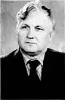

КАСІЛОВ Юрій ІвановичНародився 1939 року в місті Білогорську Амурської області. В Біробіджані закінчив педучилище, а пізніше — істфак Полтавського педінституту.
З 1963 року живе у Краснограді. Працював у середній школі №4, у профтехучилищі, а нині в педагогічному коледжі. Юрій Іванович — високоерудована людина, досвідчений педагог. Великий вплив на формування його світогляду мала поезія Єсеніна, Грані-на та інших поетів.
Писати вірші почав з юнацьких років. На сьогодні його доробок нараховує більше сотні віршів, друкувався в районній і обласній газетах. Заповітна мрія — видати збірку віршів. У своїх віршах Юрій Іванович оспівує красу рідного краю, закликає творити добро. Стыдимся доброты й прячем, Как рубль в заветный кошелек. А мне хотелось бы нначе, Чтоб не копили ее впрок. В нас слишком много практицизма: Ты — мне, я, может быть,— тебе. Глаза— весы полны цинизма, Не прогадать бы в торге мне. А доброта — она без веса, Скорей на пригоршни возьми. Она как луч средь жути леса, Она как в ссоре "извини ", Она — спаситель в нашем мире, Как в шторм сигнальные огни. Давайте ж вновь вернем ей силу И будем ДОБРЫМИ ЛЮДЬМИ. Юрій Іванович тонко відчуває мелодію природи, вбирає від неї натхнення до творчості: Мне одиночество — отрада Среди моих полей, лесов, Ведь столь желанная награда Мне— звуки птичьих голосов. Хитросплетенье лесных тропок, Рассказ ручья й шепот ив Подскажут мне на книжку строчек. Я не скучаю в зтом мире— Наш край й светел, її красив, Мне просто некогда скучать: Гляди, и сосны, и рябины Хотят мне что-то рассказать. Юрій Іванович у розквіті творчих сил.